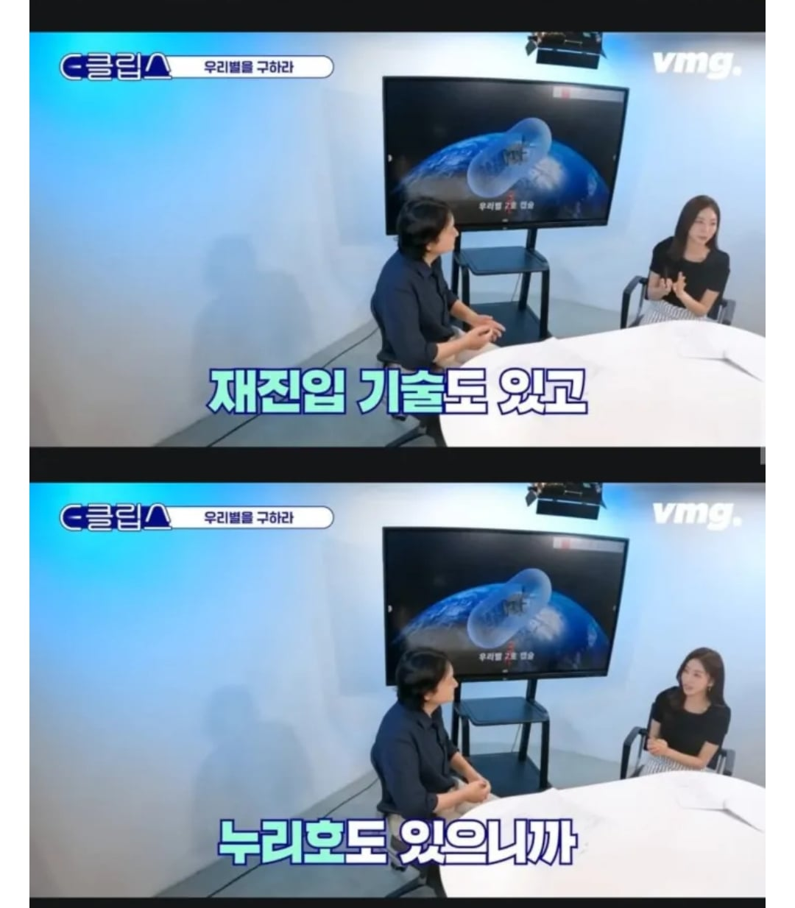
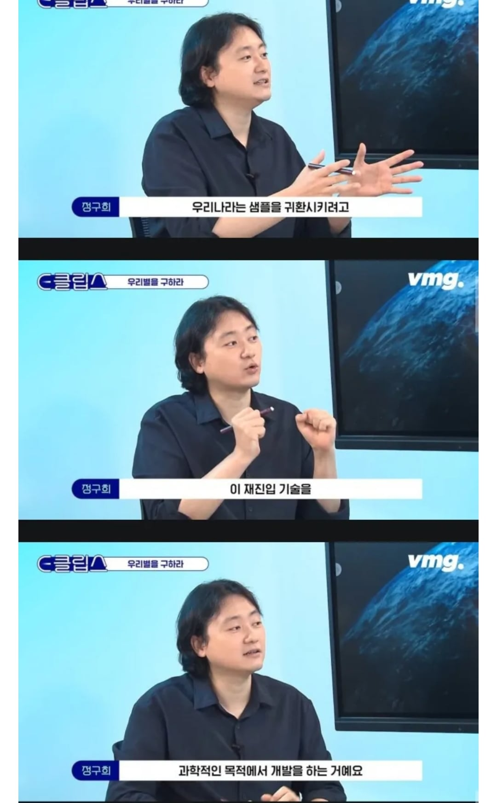

: 샘플 귀환 및 연구 목적용 맞지?
: 예
: 그래 잘하자
당황
??? : (미친??? 침착하게 침착하게) 연구용 입니다
3....2....1...
평온하게 스루하는 모습이 웃겨서 밈으로 남겨진 사람..ㅋㅋ
질량 투사체가 재진입하려다 실패해서 우연히도 적국 수도에 꽂아버렸네요;;; ㅈㅅㅈㅅ
눈치!!!
표정 신난거 보소 ㅋㅋㅋ
폭파는 예술이다!
북한도 지들이 인공위성 쏜다고 하겠지?
인공위성 기술 맞지. 네. 그래 열심히 하자.
우연히 지나가던 해군 잠수정이 수거
로켓에 핵탄두를 달면 그게 핵미사일이죠.
아닙니다. 아무튼 그거랑 다르다니까요
굳이 핵일 필요는
마니 쏴서 더 강한 화력을 선보이면 됨
샘플을 가지고 귀환한다고?
음...그럼 미국에서 뭔가...뭔가를 탑재한 위성을 미리 띄워 놓으면
그걸 회수하며 재진입이 가능하단 거네요?
석유를 가지고 귀환
그래 잘하자
그래서 그 샘플을 누구한테 배달하는거죠?
랜덤(높은확률로 북쪽)
우리도 재사용 로켓 연구 하고있으려나
일론은 내려와서 붙잡고
중국은 무슨 와이어인가 그물에 걸어서 붙드는거 하던데
참고로 우리나라 원전만드는게
핵탄두 만드는것보다 훨씬 어려움
원전만드는것 보다 K STAR 가 더 어려움?
볼때마다 웃기네 ㅋㅋㅋㅋ 근황올림픽 두분 출연하심 재밌을듯
눈치챙기라고 ㅋㅋㅋ
예? 다탄두미사일요?
재진입 성공!!!